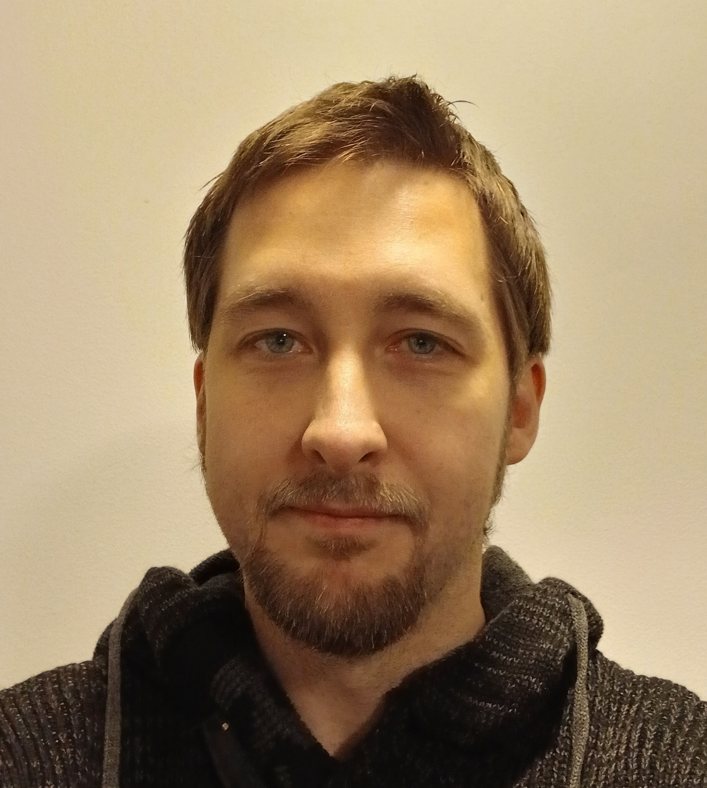
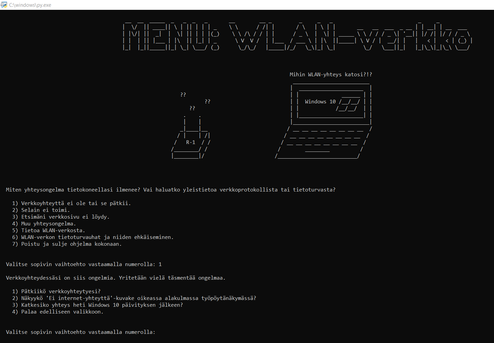
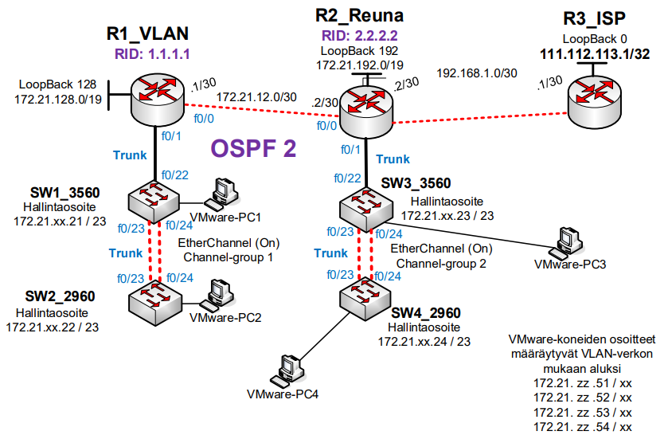
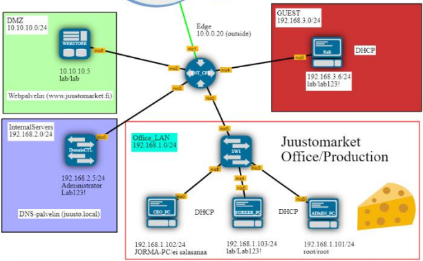
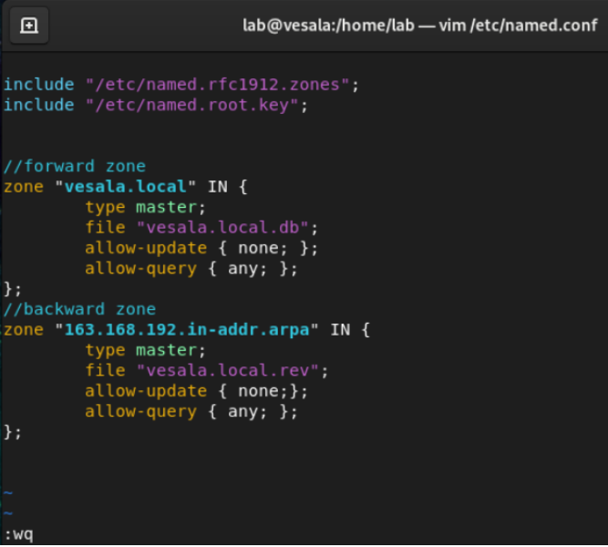
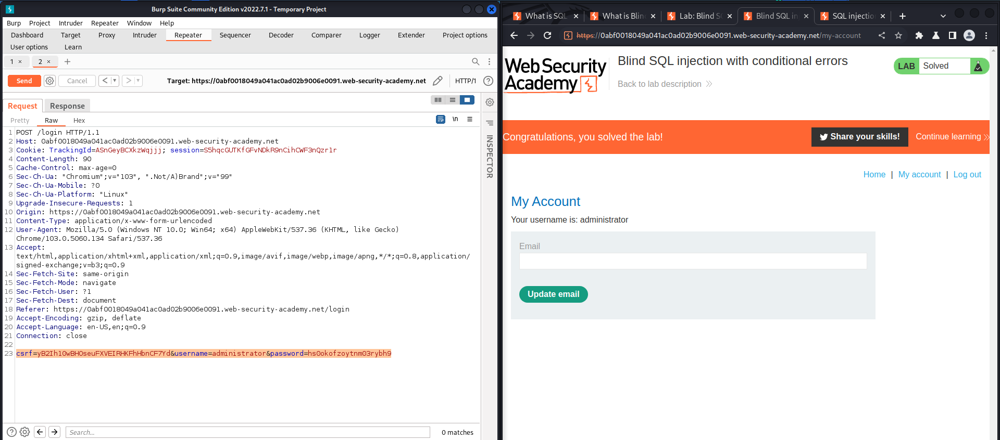
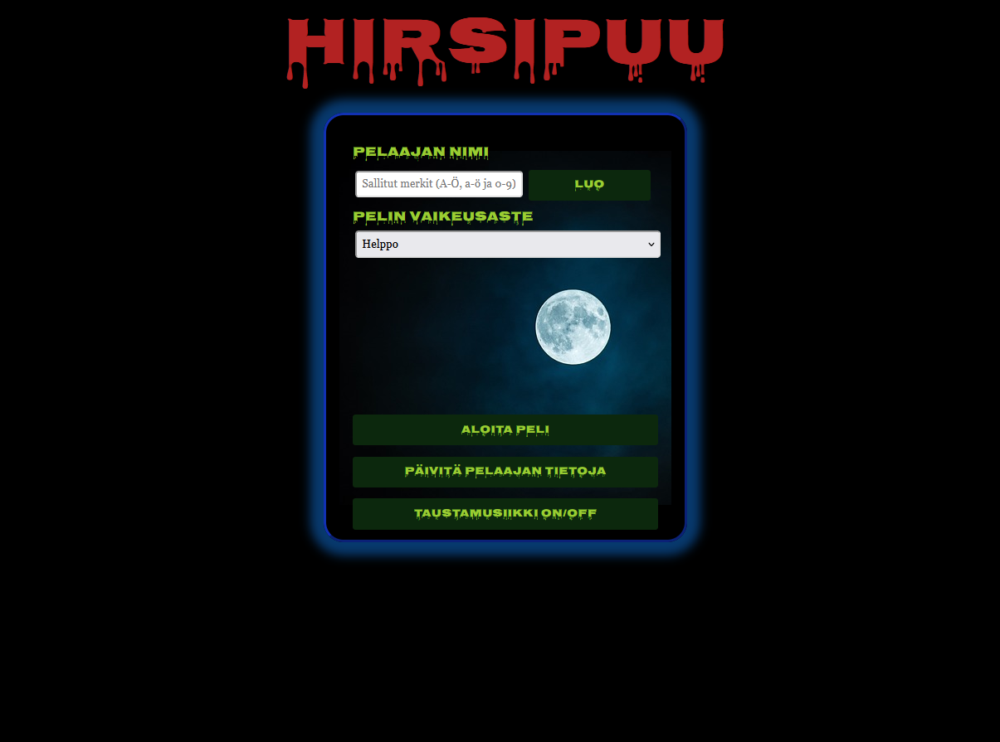
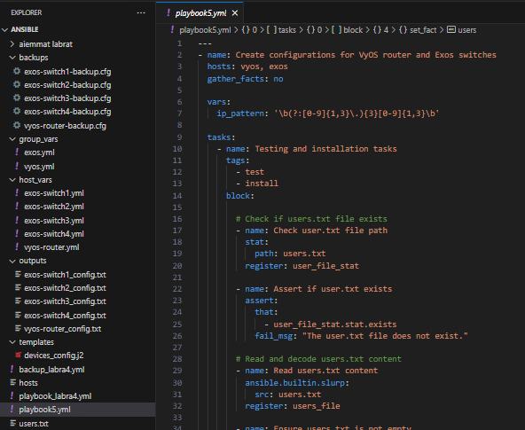
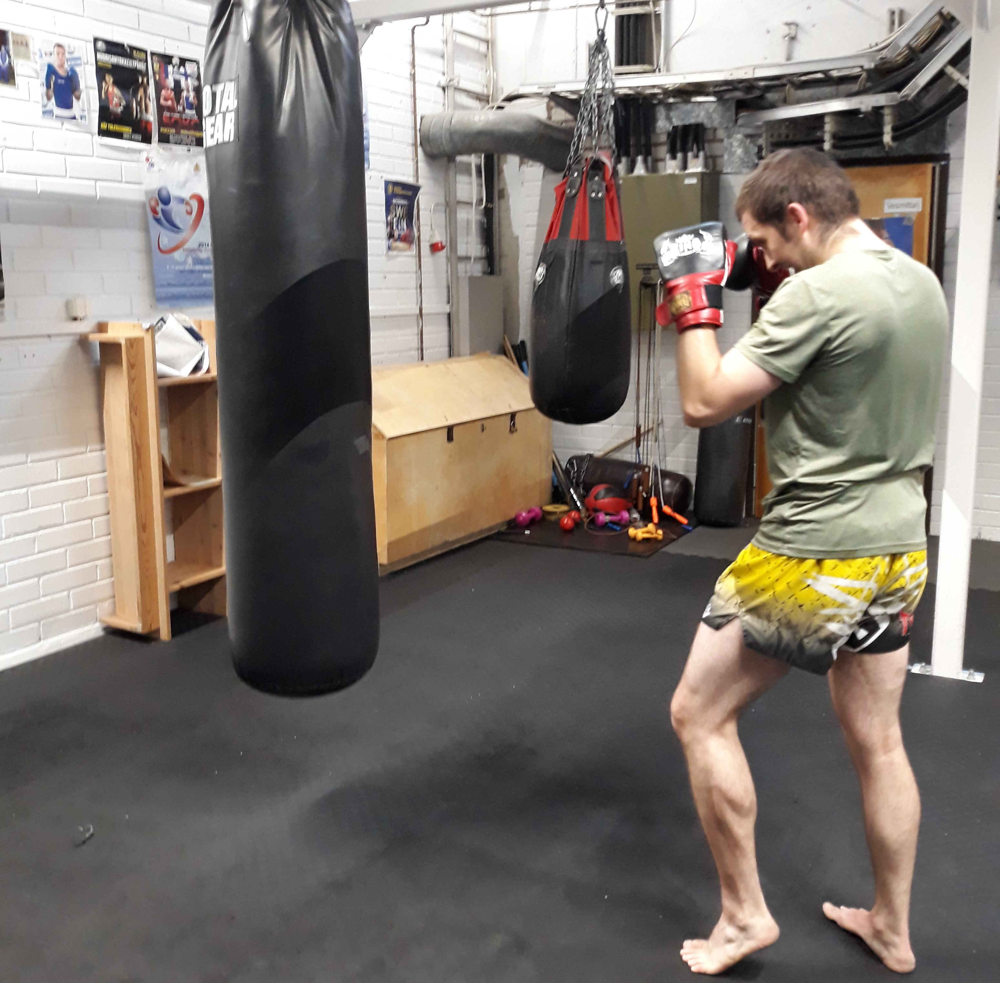
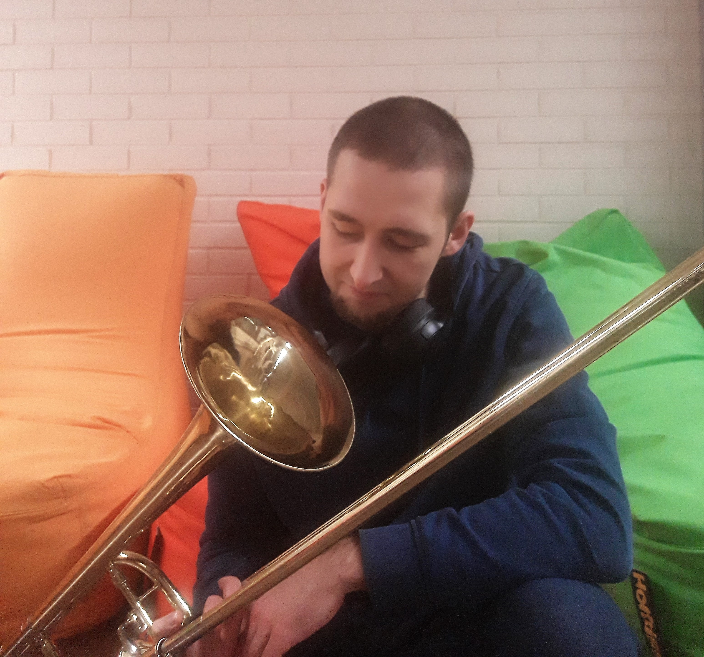

2023-2025
Jamk: Tieto- ja viestintätekniikan opinnot

Jamk: Tieto- ja viestintätekniikan opinnot
Xamk: Kyberturvallisuusinsinöörin opintoja
Tietojenkäsittelyn opintoja yliopistolla Ruotsissa
Sosiaali- ja terveysalan tutkintoja
Kaksoistutkinto
Palvelukeskus ITOC:ssa työ pohjautuu vahvasti ITILv4 viitekehykseen ja erityisesti häiriönhallintaan. Muita tärkeitä prosesseja työssä ovat ongelman- ja muutoksenhallinta sekä palvelupyyntöjen suorittaminen. Toimin ITOC:ssa järjestelmäasiantuntijana asiakaspalvelija- ja asiantuntijaroolissa, palvellen verkko-, palvelin- ja tietoturva-asiakkaita. Työtehtäviin kuuluu tietojärjestelmä-, tietoliikenne- ja tietoturva-alueen tukitehtävät sekä muun muassa verkkolaitteiden etähallintaa, konfigurointia ja valvontaa. Operoin Telia Cygaten ja asiakasympäristöjen vikatilanteiden parissa ja pyrin ratkaisemaan ongelmia yhdessä asiakkaiden asiantuntijoiden kanssa.
Työ ITOC:ssa on monipuolista sillä Telia Cygatella on runsaasti asiakkaita erilaisine palveluineen, joiden toimivuutta valvotaan jatkuvasti ja vikatilanteissa korjataan SLA-perusteisesti. Kommunikaatio asiakkaiden kanssa tapahtuu pääosin puhelimitse, sähköpostilla tai tikettijärjestelmien kautta suomeksi ja englanniksi, mutta myös muillakin kielillä omaa kieltä pääsee laittamaan solmuun. Töissä saan tutustua erilaisten yritysten verkkoympäristöihin ja hakkaamaan päätä seinään muun muassa SDWAN-, LAN-, WLAN-, palomuuri- ja palvelinongelmien parissa. Asiakkailla ja Telia Cygaten ympäristöissä on monen laitevalmistajan laitteita, joten erityyppisistä laitteista saa kokemusta. Arjen työssä tehdään runsaasti vianmääritystä, koska meidän tiimin leipätyönä tosiaan on häiriönhallinta, minkä ansiosta opin paremmin eri teknologioita, käyttämään vaihtelevia työkaluja sekä lukemaan ja analysoimaan erinäistä dataa, kuten verkkolaitteiden lokitietoja. Saan jatkuvasti myös kokemuksia asentajien kanssa tehtävistä asennuksista ja laitevaihdoista.
Järjestelmäasiantuntijan työ ITOC:ssa on ensimmäinen verkkopainotteinen työpaikkani, josta olen saanut hyvää oppia, sillä se toimii yhteyspisteenä moneen muuhun yksikköön. ITOC:n kautta olen saanut käsitystä, mitkä teknologiat vaikuttavat kiinnostavilta ja joihin haluan syventyä lisää osaamisen kartuttua. Yhtenä esimerkkinä itseäni kiinnostaa perus tietoliikenne osaaminen, minkä innoittamana suoritin Ciscon CCNA sertifikaatin töiden ohessa. Tämän kaltainen IT-työ opettaa myös eritoten itsenäistä työotetta, vaatii uusien asioiden oppimista joka päivä ja ehkäpä tärkeimpänä opettaa rohkeutta tarttua tuntemattomiin ongelmiin. Myös hyvät asiakaspalvelutaidot, sopivan rento asenne ja huumorintaju sekä pitkäjänteisyys kantaa töissä pitkälle. Tulevaisuudessa olisi mielenkiintoista syventää osaamista skriptauksesta ja automaatiotyökaluista.
Työskentelin Service Desk Agentina ja työtehtävänäni oli auttaa ratkaisemaan työntekijöiden tietoteknisiä ongelmia Stora Enson Suomen ja Ruotsin tehtailla. Palvelin käyttäjiä puhelimitse ja sähköpostin välityksellä sekä suomeksi että ruotsiksi tarpeen mukaan. Ongelmat liittyivät pääosin tehtaiden sisäisiin järjestelmiin, kirjautumisiin, puuttuviin lisensseihin, laite- ja verkko-ongelmiin tai VPN-yhteyteen. Koska käyttäjien ongelmia oli haastava ratkaista pelkästään suullisesti, käytettiin päivittäin eri etähallintatyökaluja.
Työpäivän aikana vaihtelin kielestä toiseen, kun vastaanottamani puhelut tulivat joko Suomesta tai Ruotsista. Lisäksi kokouksia oli englanniksi, sillä teimme tiivistä yhteistyötä toisen Global Service Desk-yksikön kanssa. Opin vianmääritystä, tutustuin Windowsin vianmääritysohjelmiin, analysoin vikatilanteita ja oppin uusia teknisiä kikkoja. Vikoja ratkaistaessa pääsi myös testaamaan hieman paineensietokykyäkin ja yhteistyötaitoja. Tarvittaessa pystyin myös kysymään kollegoilta apua tai lähettämään lisäkysymyksiä eri tiimeille ratkaisun löytämiseksi. Saavutin asettamani tavoitteet eli opin paremmin palvelemaan ruotsin kielellä, näin millaista työskentely Service Deskissä on, sain lisää itseluottamusta omaan tekemiseeni ja pääsin tutustumaan itselleni tuntemattomiin työkaluihin, palveluihin ja järjestelmiin.
Service Desk-työ antoi esimakua siitä, miten laaja-alainen työkenttä IT-ala on ja kuinka oppimista riittää loputtomiin. Töiden myötä lisääntyi kiinnostus ylläpidollisiin tehtäviin, tietoliikenne protokollien toimintaan sekä verkkolaitteiden näpräämiseen. Työ herätti myös halun oppia ymmärtämään lisää pilvipalveluista ja tekoälystä, sillä nämä ovat yhteiskunnallisesti merkittäviä teknologioita ja vaikuttavat arvaamattomilla tavoilla kaikkien meidän arkeen. Uskon tulevaisuudessa töissä olevan oleellista teknisen osaamisen lisäksi yritteliäs asenne, uteliaisuus uuden oppimiseen ja hyvät ihmissuhdetaidot, sillä tekniikka on kyllä opittavissa työskentelyn myötä.
Jamk:ssa insinöörin opinnot jakautuivat perusopintoihin ja ammatillisiin opintoihin. Perusopinnoissa keskityttiin yleisiin taitoihin, joita tietotekniikan insinöörin olisi hyvä osata. Ohjelmassa oli matematiikkaa, fysikkaa, kieliä, tieto- ja ohjelmistotekniikan perusteita yms. Ammatillisissa opinnoissa puolestaan syvennettiin osaamista oman mielenkiinnon mukaan. Näissä opinnoissa pääsi enemmän laittamaan 'kädet saveen' ja kokeilemaan teoriatiedon soveltamista käytäntöön, esimerkiksi erilaisissa laboraatioissa. Alla on listattuna suorittamiani kursseja.
Tähän mennessä olen vapaa-ajalla saanut muutaman teknisen projektin valmiiksi: hirsipuupelin full stack-sovelluksena, verkkoyhteyden vianmääritysohjelman Windows 10 PC:lle ja nämä websivut, jotka on tehty W3Schools-sivuston materiaalia käyttäen. Alta kuvia klikkaamalla kuvagalleriasta lisäinfoa näiden töiden lisäksi myös muutaman kurssin sisällöstä ja niissä teetetyistä harjoituksista.








Pasuuna ei ole se kaikkein mediaseksikkäin soitin eikä sille monen muun instrumentin tapaan löydy kasapäin kuunneltavaa materiaalia. Siksi onkin hauska äänittää omia sävellyksiä ja sovituksia esimerkiksi pasuunakvartetille tai -triolle ja käyttää niitä muissa projekteissa. Itse äänitän suhteellisen edullisilla välineillä ja miksaustakin tulisi oikeasti opetella, jotta laatu olisi timanttisempaa. Äänityksissäni on käytössä usein yksinkertainen setup: Audacity-sovellus, AKG:n D40 dynaamista instrumenttimikrofoni, JBL:n Tune750BT-kuulokkeet ja Focusrite Scarlett-äänikortti. Alla mp3-tiedostona muutama äänitysten hedelmistä: pasuunasekstetille G. P. da Palestrinan Missa Papae Marcelli-messun Kyrie ja oma pasuunakvintettini.
Thaiboxing (Muay Thai) on toinen henkireikä arjen keskellä, jonka myötä unohtuu mukavasti muut kiireet. Nopeatempoisena ja monipuolisena lajina muuta liikuntaa ei juurikaan tunnu olevan tarvetta harrastaa. Paitsi koska 'no run, no muay thai', niin pitää sitä myös hieman juostakin. Thaiboxingin harrastaminen amatöörinä on hauskaa, varsinkin silloin kun löytyy treenikaveri, joka on samalla ’aallonpituudella’. Halutessaan lajin piiristä löytää varmasti aina uusia haasteita, kuten kilpaileminen salikisoissa. Itsensä kehittämistä voi jatkaa loputtomiin.

